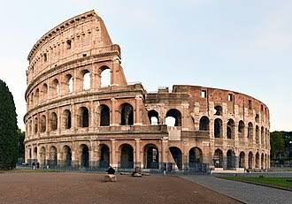
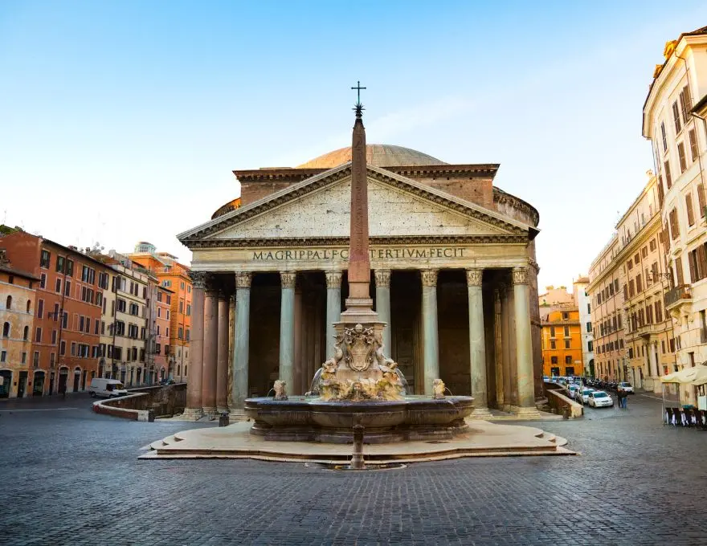

Informações
Nesta página encontram-se dados demográficos, geográficos e curiosidades sobre a cidade de Roma organizados num layout em grelha 2D.

Dados sobre Roma
| Demografia | População | 2.751.747 hab |
|---|---|---|
| Densidade populacional | 2141 hab/km2 | |
| Geografia | Área | 1285 km2 |
| Região | Lácio (Lazio) | |
| País | Itália | |
| Website | www.comune.roma.it | |
5 Curiosidades sobre Roma
- A Fonte de Trevi recolhe milhares de euros: Todos os dias os turistas atiram cerca de 3.000€ em moedas para a Fontana di Trevi, valor que é doado a instituições de caridade.
- Uma cidade dentro de outra cidade: Roma é a única cidade do mundo que tem um país independente inteiro dentro do seu território — o Estado da Cidade do Vaticano.
- Gatos são património biocultural: Em Roma, existe uma lei que protege os gatos vadios, permitindo-lhes viver livremente nas ruínas históricas, como no Largo di Torre Argentina.
- Mais de 2.000 fontes: A cidade conta com mais de duas mil fontes, sendo que centenas delas (conhecidas como nasoni) fornecem água potável gratuita 24 horas por dia.
- A primeira universidade e centro comercial: Os Mercados de Trajano, na Roma Antiga, são considerados pelos historiadores o primeiro "centro comercial" coberto do mundo.

